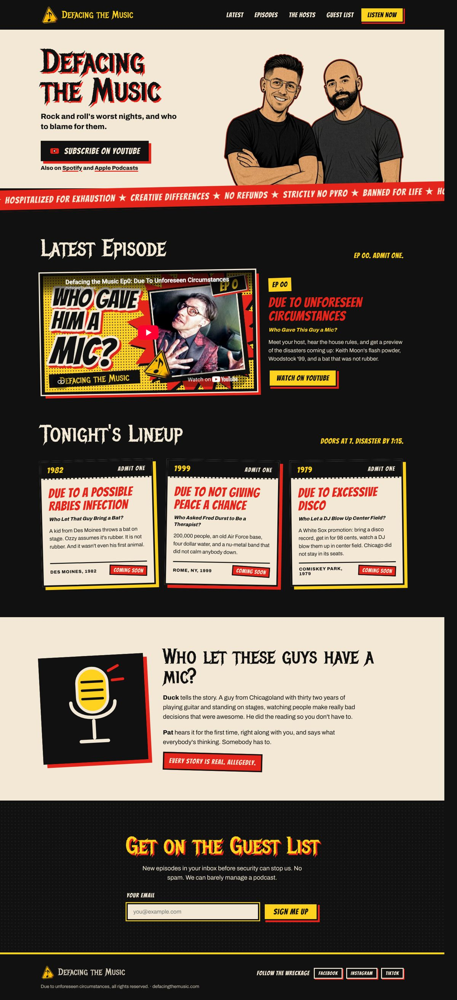
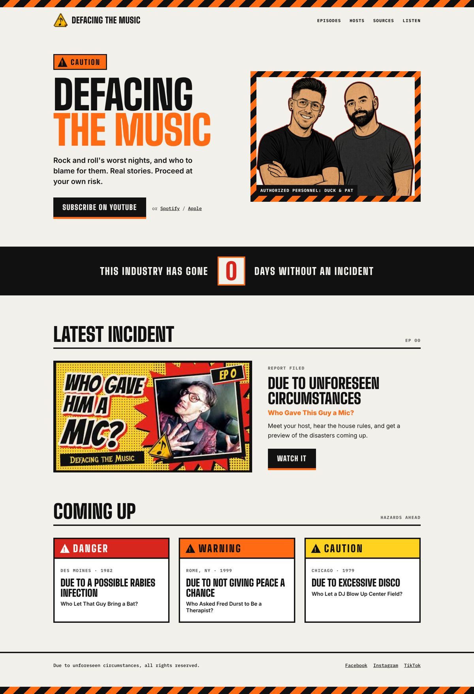
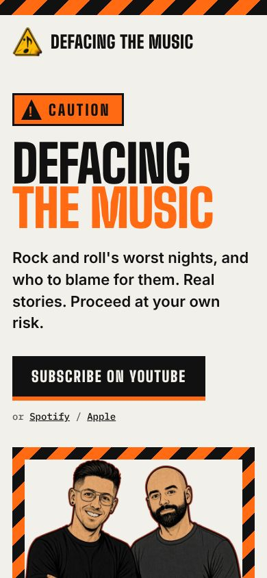
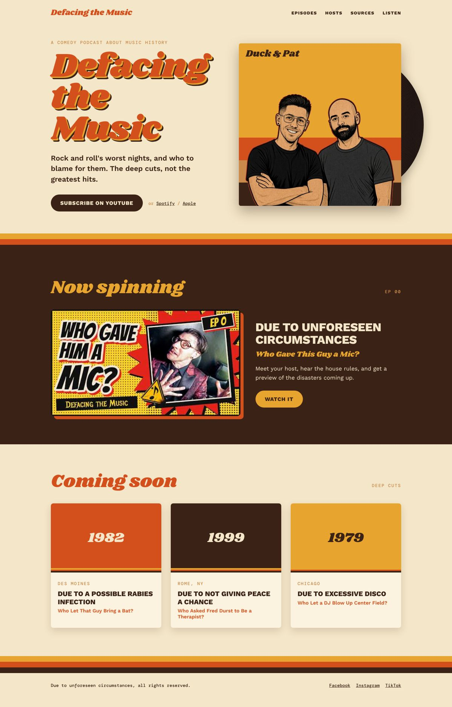
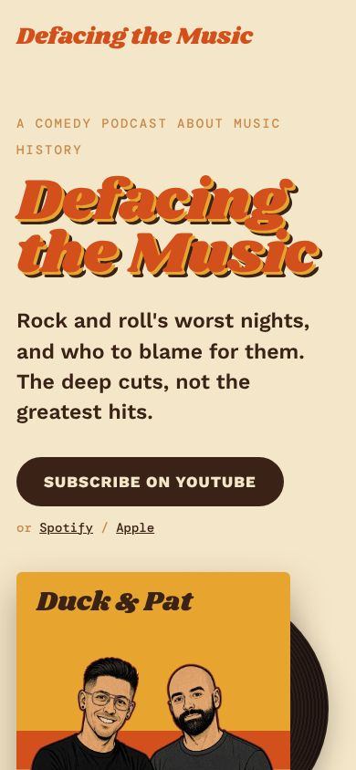
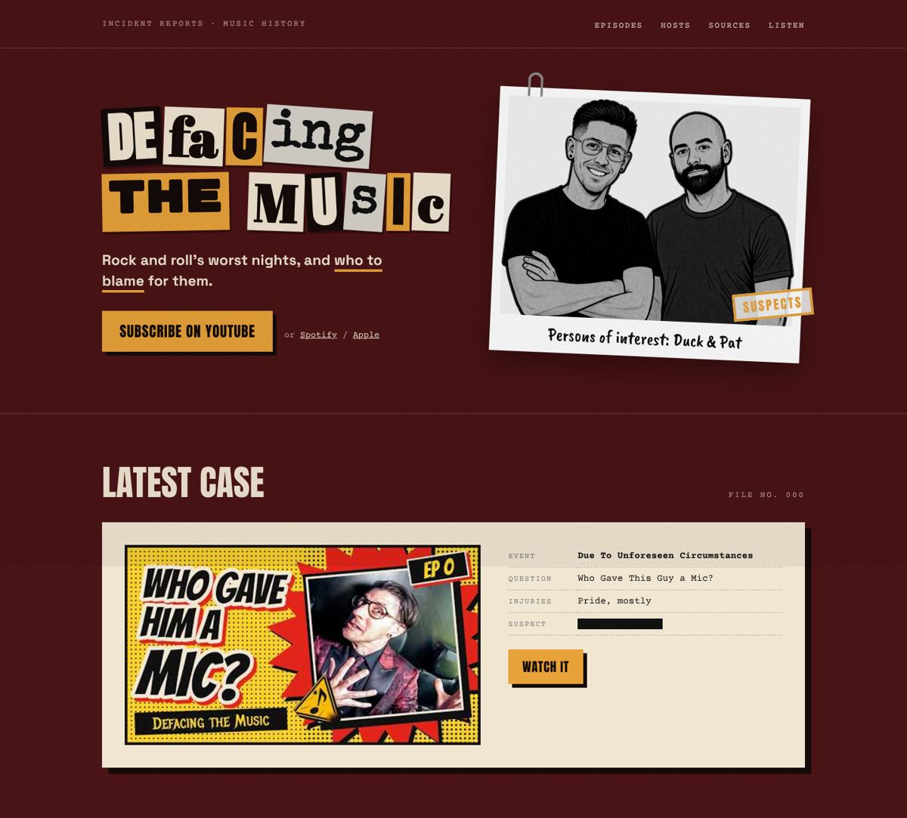
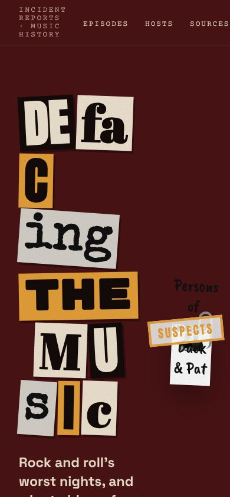

Website options
The site that's live now, plus two new directions, plus the Suspects one Duck asked to hold onto. Same content in all of them so you're only comparing the look. Each one has a button to open the real page (try it on your phone too). Nothing here is live.
Current: Gig Poster
Black, red and cream with the cartoon drop shadows, Metal Mania lettering, the scrolling red banner. You two front and center on cream, latest episode right below.


Hazard
Built off the logo: the show is a warning sign, so the whole site is safety signage. off-white, black, safety orange.
- Caution-tape stripes top and bottom, you two framed in hazard tape: "Authorized personnel: Duck & Pat".
- "This industry has gone 0 days without an incident."
- Upcoming stories are real-style safety signs: DANGER, WARNING, CAUTION.


B-Side
A 70s record sleeve: warm, groovy, classic rock. cream, mustard, rust, brown.
- Big chunky 70s script for the name, you two on an album cover with the record sliding out.
- "Now spinning" for the latest episode, "the deep cuts, not the greatest hits".
- Upcoming stories as record sleeves by year, 70s stripes between sections.


Suspects
Ransom-note letters, you two as a paper-clipped polaroid stamped SUSPECTS, the latest episode as a case file. Shown in Oxblood; the page has six color schemes (switch with the links).


Things to talk about
- Which one feels most like the show when you hear it?
- Mixing is fine: a layout from one and colors from another.
- Whatever wins also sets the look for thumbnails, the YouTube banner and merch, so picture it on a shirt.